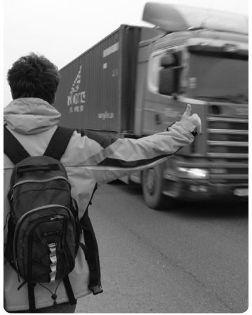

Date: Now 21, 2013
Автостоп: от А до Я
Если вас спросят: существует ли способ добраться из пункта А в пункт Б совершенно бесплатно (ну или скажем, с минимальными затратами) и при этом получить массу эмоций, которые не даст даже просмотр канала Discovery. Это - автостоп.
Автостоп - это условно-бесплатное или абсолютно бесплатное передвижение на попутных транспортных средствах исключительно с согласия водителя или владельца. При такой формулировке сразу понятно, что возможен автостоп не только на автомобиле, но также и на поездах, электричках, яхтах и даже самолете
ПРЕДУПРЕЖДЕНИЕ!!!
В данной статье я буду рассматривать только автостоп на автомобилях, самый привычный для студентов.
Также спешу вас огорчить, что проезд «зайцем» в общественном транспорте благодаря различным ухищрениям это не то. Впрочем как и вариант, когда вы планируете вместе с другом поехать на его машине в другой город или страну. Автостоп - это когда вы стоите уже на дороге с поднятым вверх пальцем. Случайностей в автостопе нет. И это одно из самых главных заблуждений! Автостоп - это всегда контролируемое вами передвижение в направлении поставлен-ной цели! А значит вы его можете планировать, даже если вы пока не знаете имен водителя, его детей, собаки или тещи.
И наконец, хочется напомнить тебе, что автостоп возможен вообще без денег, но и символическая бутылочка пива или немного денег на бензин не ставит тебя в один ряд с буржуями у которых на руках билеты на автобус или электричку. Отличный способ оплаты мне подсказали на форумах автостопщиков, я ведь готовился к воскресной вылазке на дорогу. Он очень прост: деньги давать так, чтобы они не были деньгами! Вы спросите как? Да я и сам был вначале в тупике... Все очень просто: платите купюрами другой страны, превращая деньги в сувениры (хотя такой метод плох для нашей страны).
ПЛАТИТЕ КУПЮРАМИ ДРУГОЙ СТРАНЫ, ПРЕВРАШАЯ ДЕНЬГИ В СУВЕНИРЫ
Люди, которые подбирают автостопщиков, как правило, очень дружелюбны. Но вместе с тем, выбирая автостоп, вы рискуете столкнуться с опасностями, исходящими от преступников (водителей), попасть в аварию и т.д. Чтобы автопутешествие было безопасным, берегите себя, и с серьезностью подходите к выбору водителя. Существует множество преступников, специально охотящихся на автостопщиков - и маньяки, и психи, да мало ли кто. Поэтому, если у вас появились сомнения, или если остановившийся водитель не нравится вам, лучше отказаться от поездки. При сомнениях лучше не говорите остановившемуся водителю, куда вы едете, а узнайте у него, куда едет он, и назовите другое место. Не ленитесь и запоминайте номер остановившегося автомобиля, его марку, модель и цвет, прежде чем ехать. Если появились сомнения, сбросьте информацию своему знакомому в виде СМС.
Главной проблемой для новичков является долгое и безрезультатное ожидание, просто все автомобили, водители каких соглашаются подвезти вас, идут не туда, куда вам надо. Не нужно отчаиваться и проклинать авто-стоп - лучше просто перейти на другое место (или пере-ехать). Иногда вы получаете предложение подвезти вас, какое не слишком приблизит вас к вашей цели. Если вы стоите в местности, где никто не останавливается, это поможет вам, но если вы видите, что машин вокруг достаточно, лучше подождать более подходящего варианта. Отличный вариант, если вы попросите, чтобы вас подбросили до бензоколонки, мест отдыха, платной стоянки, и пр. «уловистых» мест. И старайтесь договориться об этом сразу, чтобы не попасть случайно в место, откуда будет сложно уехать. Осуществляя путешествие на автомобиле автостопом, садитесь в автомобиль с одним водителем, или парой пассажиров; не садитесь в машину, если видите, что в ней полно людей.
ЕСЛИ У ВАС ЕСТЬ ВОДИТЕЛЬСКОЕ УДОСТОВЕРЕНИЕ, ВОЗЬМИТЕ ЕГО С СОБОЙ – МНОГИЕ ВОДИТЕЛИ ОСТАНАВЛИВАЮТСЯ, Т.К. ХОТЯТ, ЧТОБЫ ПОПУТЧИК ПОМОГ ИМ ЕХАТЬ
Старайтесь сесть на переднее сиденье, если есть возможность, задние двери часто можно запереть автоматически, и вы не сможете открыть их самостоятельно. Если же вам пришлось сесть сзади, прежде чем закрыть дверь, проверьте работу замка. Держите сумку или рюкзак в пределах досягаемости, чтобы в случае чего, вы могли легко забрать их. Приготовьтесь к возможности утратить вещи, если они заперты в багажнике. Носите некоторые ценности (паспорт, кошелек, деньги) в одежде, а не в рюкзаке, деньги лучше разложить маленькими кучками по всем карманам, а не в одном месте.
Путешествие на автомобиле автостопом позволит вам достаточно быстро оказаться в месте назначения. Дальнобойщики, просто путешественники часто берут попутчиков, чтобы было веселее выдерживать долгую дорогу. Вы вскоре обнаружите, что разные люди имеют разные причины для подбора вас, но есть ряд вещей, которые вы можете сделать, чтобы улучшить свои шансы на получение попутчика.

#1. Одевайтесь аккуратно и солидно. Вы должны выглядеть не просто не угрожающе для любого водителя, но и привлекательно для него же, если хотите совершить дальнее путешествие на автомобиле. Но не нужно в этом переусердствовать. Если вы нарядитесь в деловой коcтюм, люди подумают, что вы немного странный.
#2. Идеальный попутчик, – которого с удовольствием подбирают водители, должен улыбаться и выглядеть доброжелательным. Важно, чтобы люди могли видеть вас, так что воздержитесь от ношения солнцезащитных очков.
#3. Когда машина останавливается, спросите водителя, куда он едет – за это время вы можете рассмотреть водителя и, если он вам не нравится, отказаться от поездки, сказав, что вам не по пути.
#4. Стоппер-попутчик всегда путешествует налегке, вас вряд ли будут подбирать с радостью, если вы будете тащить с собой большие баулы
#5. Идеальный попутчик никогда не курит в чужой машине без разрешения.
#6. Водительское удостоверение - возьмите его с собой.
Все что я написал выше безусловно пригодиться каждому из вас в жизни, ведь она непредсказуема и пре-подносит нам сюрпризы постоянно.
Возможно у вас появился вопрос и на кой эта статья мне, лето уже прошло и теперь нужно ждать следующего? Так я вам отвечу. Благодаря автостопу некоторые студенты добираются на пары или вовсе ездят домой на выходные, когда в кассах вокзалов висит табличка «билетов нет». Для меня лично автостоп - это способ познакомиться с городами нашей синеокой и хорошо отдохнуть т.к. ввиду загруженности летних будней я был привязан к городу руками и ногами. А тут отличный вариант: в единственный выходной выйти на дорогу и отправиться в другой областной центр и вернуться домой, причем тратить деньги приходилось лишь на еду и билеты в музей. Заряд эмоций был настолько большим, что его хватало на всю рабочую неделю.